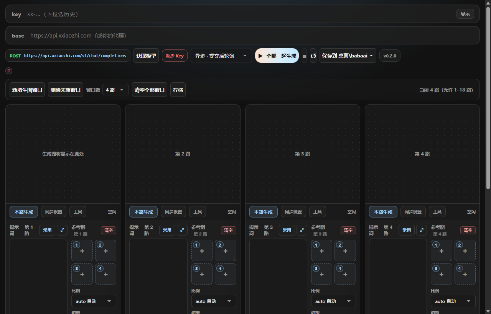
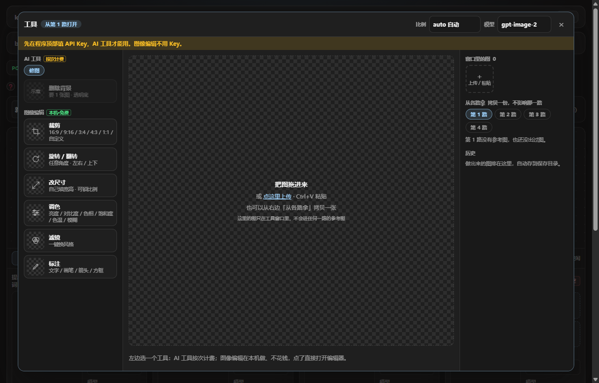

1安装
- 下载
imagegen-desktop_windows_amd64.exe，放到任意文件夹（桌面、D 盘都行，别放在会被清理的临时目录）。 - 双击运行。Windows 弹「已保护你的电脑」→ 点 更多信息 → 仍要运行。程序没有买签名，第一次会这样，以后不会再问。
- 窗口打开就装好了。没有安装向导，不写注册表；不想用了，删掉 exe 和旁边生成的几个文件就行。
用之前要有一把 API Key：兼容 OpenAI 接口的 Key 都行。接口地址默认是 api.xxiaozhi.com，也可以换成你自己的代理。
窗口看起来像普通浏览器页面、或者用 Edge 打开的：说明电脑上没有「WebView2 运行时」。功能一样能用；想要原生窗口，装上 WebView2 运行时后重新打开程序。
2第一次打开：顶栏

| 位置 | 是什么 |
|---|---|
| key | 填 API Key。填过的会记在下拉里，下次直接选；显示 看明文。Key 只存在程序自己的数据区，不上传到别处。 |
| base | 接口地址。带不带 /v1 都行，程序自己处理；不小心粘贴了完整的 …/v1/chat/completions 也会自动裁成根地址。 |
| 获取模型 | 用这把 Key 去接口拉一次模型列表：既是检查 Key 和地址填没填对，也是刷新每一路的「模型」下拉。 |
| 模式 | 异步 · 提交后轮询（默认）：提交后程序自己等结果。同步 · 等待直接返回：接口直接回图。一般不用改。 |
| 全部一起生成 | 所有路一起提交。 |
| 保存到 … | 出的图存在哪。点开可以看、改（弹出文件夹选择）、打开这个文件夹。 |
| 版本号 | 当前版本。有新版时会亮，点开看更新内容，见 更新。没填 Key 时这里旁边会有红色的「缺少 Key」。 |
3出图
路数
一路 = 一个独立的出图窗口，各有自己的提示词、参考图、比例、模型。新增生图窗口 / 删除末路窗口 加减，或者直接在「窗口数」里选（1–18 路），下次打开还是这个路数。清空全部窗口 把所有路的提示词、参考图、结果一起清掉。
每一路里
| 位置 | 怎么用 |
|---|---|
| 提示词 | 写你要的画面。在框里按 Enter 直接发送这一路，Shift+Enter 换行。 |
| 常用 | 常用片段：把选中的一句话存起来，下次一键插回来。 |
| 参考图 | 每路最多 4 张，点格子上传，也可以粘贴或把图拖进去。清空 清掉这一路的参考图。 |
| 比例 / 模型 | 比例默认「自动」；模型从 获取模型 拉回来的列表里选。 |
| 本路生成 | 只提交这一路，排进队列按顺序执行；别的路不受影响。 |
| 同步设置 | 把这一路的比例、模型、参考图刷给其他所有路，省得逐路点一遍。 |
| 工具 | 打开工具窗口，见下一节。 |
存档
存档 把整套现场（所有路的提示词、参考图、比例、模型、路数）存成一份，随时切回来；也能导出成 JSON 文件、从文件导入（同名的不覆盖，会另起名字）。
出错了
4工具窗口
每一路的 工具 按钮打开的是同一个窗口。窗口里的图只在窗口里：上传、粘贴、拖进来的图不会进任何一路的参考图，只有你点「用这张」才会。

左：工具AI 预设按分类列出；下面是图像编辑的入口。
中：当前图大图预览。做完的结果可以按住拖动对比前后。用这张 ▾：放进第 N 路参考图 / 打开所在文件夹 / 从窗口移除（文件不删）。
右：放图和历史上传（也能 Ctrl+V 粘贴、拖进来）、从各路拿一份；每次的结果都排在这里，点哪张就切到哪张。
AI 预设（按次计费，要 Key）
- 左边点一个预设。窗口会按预设的要求出现 1–4 个图格，每格写明放什么，比如「上传人物的图像」。
- 把图按顺序放进格子（从右边的历史里点，或者直接上传）。
- 点 开始生成。结果进右边的历史、自动存到保存目录，可以接着做下一个工具。
图像编辑（本机做，不花钱、不要 Key）
先在右边点一张图，再点一个编辑卡片，就打开编辑器：
| 卡片 | 能做什么 |
|---|---|
| 裁剪 | 自定义 / 原图 / 16:9 / 9:16 / 3:4 / 4:3 / 1:1，拖框选范围 |
| 旋转 / 翻转 | 任意角度，左右 / 上下翻转 |
| 改尺寸 | 直接填宽高像素，可锁定比例 |
| 调色 | 亮度、对比度、色相、饱和度、色温、模糊 |
| 滤镜 | 一键换风格 |
| 标注 | 文字、画笔、箭头、方框等 |
编辑器上方是 取消 / 保存 / ×。保存 = 出一张新图进历史、存成「编辑_时间.png」，原图不动；取消什么都不存。编辑器里随时能切到别的页签，不用先关掉。
窗口里的图只在内存里，程序关了就没了；但每个结果都已经存成文件，在保存目录的「图片」里。
5文件在哪
| 什么 | 在哪 |
|---|---|
| 出的图、视频、存档、片段 | 默认 桌面\babaai，按分类分 图片\ 视频\ 存档\ 片段\。文件名 = 提示词前 16 个字_时间，比如 罗盘挂绳单手拿着_20260925-180512.png；重名加 _2。位置在顶栏 保存到 改。 |
| Key、存档、页面上的设置 | 程序自己的数据区（%LOCALAPPDATA%\babaAI-imagegen），和平时的浏览器互不影响。 |
| exe 旁边的文件 | settings.json（保存位置）、api.json（端口）、imagegen.log（日志，出问题时看这个）。都可以删，删了下次自动重建。 |
6更新
打开程序时自动查一次有没有新版。有的话顶栏右上角的版本号会亮：点开能看到每一版改了什么，点 立即更新，程序自己下载、换成新版、重新打开。不点就不更新，也不会弹窗催。
有路正在生成时，更新会先问你一声，免得打断。
7反馈
两个入口：出错的地方旁边的 反馈这个问题（自动带上是哪一路、报错原文、模型、参考图张数），和版本号浮层底部的 反馈问题 / 提建议。
- 选「出问题了」或「想要新功能」，写清楚点了什么、看到了什么。版本、系统、最近 80 行日志会自动附上；不想附日志就取消勾选。
- 点 提交反馈，浏览器会打开 GitHub 的新建页，内容已经填好，点一下「Submit new issue」就交了（要有 GitHub 账号，没有的话注册一个，免费）。截图直接粘贴到描述框里。
- 修好后会在你那条反馈下回复是哪一版修好的；程序更新后，版本号那里也会提示「你反馈的 #编号 已修复」。
反馈是公开的。日志里没有 API Key，但会有你用的接口地址和报错原文。
8常见问题
| 现象 | 怎么办 |
|---|---|
| 「连接失败」，报错带 401 | Key 不对，或者这把 Key 不是这家接口的。检查 Key 和接口地址是不是一对。 |
| 「连接失败」，报错带 404 | 接口地址不对。填接口的根地址（带不带 /v1 都行），别填到具体路径。 |
| 版本号旁边红色「缺少 Key」 | 顶栏 key 那里填上，再点 获取模型。 |
| 一打开就说端口被占 | 别的程序占了 7777 端口。改 exe 旁边 api.json 里的端口，重新打开。 |
| 再双击一次 exe | 会再开一扇窗，两扇窗共用同一个后端，数据是同一份，不冲突。 |
| 窗口像浏览器页面 / 用 Edge 打开的 | 没装 WebView2 运行时，功能不受影响；装上后重新打开就是原生窗口。 |
| 想看程序在干什么 | exe 旁边的 imagegen.log。里面没有 Key。 |